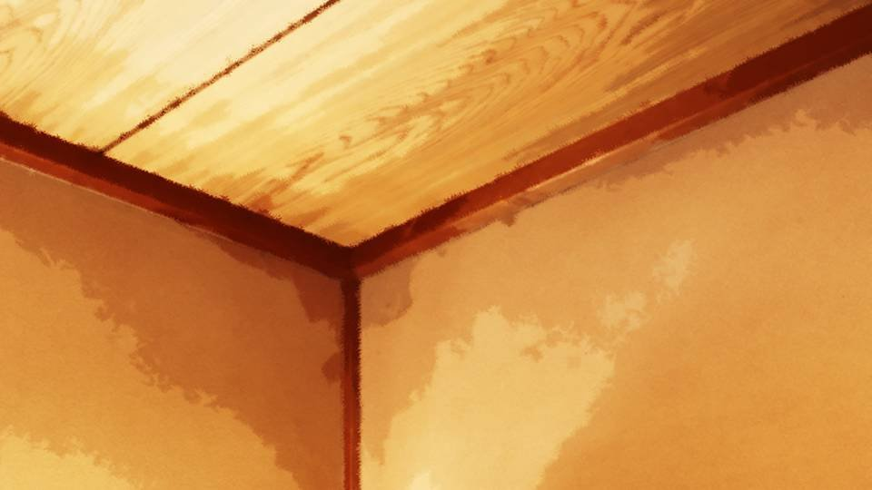
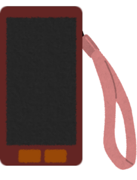

This scene is not unlocked yet in your progress
死月妖花～密触～


突然鳴り響く不気味な轟音――
これは豊岳駅で聞いたあの音と同じだ！

私と夏菜ちゃんは外に飛び出し、空を見上げる。

鳴り響く轟音には似合わない美しい月が空に浮かんでいる。
そしてその空に下には――。
そしてその空に下には――。

「五島！」
「古郡先輩！ 夏菜ちゃんも！」
五島も音に驚いて蔵から出てきたようだ。
「古郡先輩！ 夏菜ちゃんも！」
五島も音に驚いて蔵から出てきたようだ。
「春花……大丈夫かな……。
メッセージ送っても返事ないし……。
やっぱり、地下だと電波届かないよね」
と、突然五島が夏菜ちゃんの肩をつかみ怒号を上げる。
「か、夏菜ちゃん！ しゃべったの！？ 新村先輩のこと、古郡先輩に話したの！？」
五島は夏菜ちゃんの両肩をつかんで揺らし、大声で迫る。
「あの……春花ちゃんのことって……？」
「新村先輩が洞窟に行くってこと、しゃべったの！？」
「う、うん……」
五島は夏菜ちゃんの両肩をつかんで揺らし、大声で迫る。
「あの……春花ちゃんのことって……？」
「新村先輩が洞窟に行くってこと、しゃべったの！？」
「う、うん……」
「あの、五島……どうしたの！？」


「古郡先輩は家の中にいてください！
もう目も閉じて、耳もふさいでください！」
夏菜ちゃんに向かっていた怒号が私にも向けられる。
下から上につきあげられる視線に、私は1歩後ずさりする。
夏菜ちゃんに向かっていた怒号が私にも向けられる。
下から上につきあげられる視線に、私は1歩後ずさりする。
「あの、えっと……」
「いいから先輩、早く来てください！」
「いいから先輩、早く来てください！」
五島は私の手を強引につかみ、家の中へと引っ張りこむ。

「古郡先輩、いいですか！？
絶っっっ対にこの部屋から出ないでください！」
「えっと……事情は……？」
「それは説明できません！ トイレに行くときは、私に電話して下さい！ 私の付き添いなしで、絶対に部屋から出ないでください！」
「えっと……事情は……？」
「それは説明できません！ トイレに行くときは、私に電話して下さい！ 私の付き添いなしで、絶対に部屋から出ないでください！」
「ん……わ、分かったよ……」
「すみません先輩、今はこうすることが最善なんです！」
「うん……」
「すみません先輩、今はこうすることが最善なんです！」
「うん……」
ぴしゃりとふすまが閉められた。
何よ……どうして何も教えてくれないのよ……。
私のせいで集落に閉じ込められているのが、そんなに恨めしいの？ 憎いの？
私のせいで集落に閉じ込められているのが、そんなに恨めしいの？ 憎いの？
違う違う、そうじゃない、五島の態度はそんな短絡的なものではなかった。
五島は焦っていたのだ。
春花の行動を私に知られ、焦っていた。
五島は焦っていたのだ。
春花の行動を私に知られ、焦っていた。
つまり、私が今の状況を知ることが良くないことなのだ。
その理由は何だろうか。
真っ先に思い当たるのは、私の予知能力だ。
チガ姉にも私と同じ能力があるらしいけど、行方不明なのと何か関係があるのだろうか。
その理由は何だろうか。
真っ先に思い当たるのは、私の予知能力だ。
チガ姉にも私と同じ能力があるらしいけど、行方不明なのと何か関係があるのだろうか。

メッセージが届いたようだ。
"なつみ、今はただ、みんなに従いなさい。"
お父さんからだった。
お父さんには、盗聴アプリを通してみんなの状況が伝わっている。
それなのに、電話ではなくメッセージで、しかもこんなあいまいな文で送ってきたということは……。
お父さんからだった。
お父さんには、盗聴アプリを通してみんなの状況が伝わっている。
それなのに、電話ではなくメッセージで、しかもこんなあいまいな文で送ってきたということは……。
"分かった、ありがとうね。"
私はただ、みんなを信じるしかない。
私にできることは、あらゆることから耳をふさぎ、目をそむけ『何も知らない』ことに徹するのみ。
だから、私にできるのは『何もしない』だ。
五島の言うことを信じて、ただ、ここにいるだけ――。
私はただ、みんなを信じるしかない。
私にできることは、あらゆることから耳をふさぎ、目をそむけ『何も知らない』ことに徹するのみ。
だから、私にできるのは『何もしない』だ。
五島の言うことを信じて、ただ、ここにいるだけ――。

仰向けになり、天井の隅をぼーっと眺める。
さっきあれほどの轟音が鳴り響いた集落が妙に静かだ。
本当に人が住んでいるのだろうかと思うほどに静かな所。
もしかしたら、今この集落にいるのは1人なのではないかとすら思ってしまう。
五島も夏菜ちゃんもおばあさんも、実はもう、ここからいなくなっているとか……。
さっきあれほどの轟音が鳴り響いた集落が妙に静かだ。
本当に人が住んでいるのだろうかと思うほどに静かな所。
もしかしたら、今この集落にいるのは1人なのではないかとすら思ってしまう。
五島も夏菜ちゃんもおばあさんも、実はもう、ここからいなくなっているとか……。
そんなあり得ない妄想に身を投げ、この体質を呪う。
私がこんな体質になったのは、私のせい。
風船を飛ばし、春花のお父さんを死なせてしまい、血を浴びた。
それがすべての始まりだった。
私がこんな体質になったのは、私のせい。
風船を飛ばし、春花のお父さんを死なせてしまい、血を浴びた。
それがすべての始まりだった。
もしあの時、私が風船を飛ばさなかったら、春花のお父さんは死なずに済んだばかりか、みんなをこんなことに巻き込むこともなかった。
今さらこんな後悔しても仕方ないのだけど、こんな大ごとになるなんて思いもしなかった。
今さらこんな後悔しても仕方ないのだけど、こんな大ごとになるなんて思いもしなかった。
風船を飛ばすなんていうちょっとしたことで、大きな事件へと将棋倒しのように発展している。
まるで、すべてが仕組まれていた1つの物語のように。
抗えない流れのように――。
まるで、すべてが仕組まれていた1つの物語のように。
抗えない流れのように――。
仕組まれていた物語……。
………… まさか、そんなこと。
五島が言っていたネクロっていう何者かの仕業で、全部何もかもが仕組まれていたりして……。
ふむ、どこかでネクロの意思が介入していたのは間違いないだろう。
偶然発生した事件もあるだろうけど、ネクロはそれを見逃さずに更なる偶然を装って介入してきた。
今まで聞いた話なら、十分にありえることだ。
………… まさか、そんなこと。
五島が言っていたネクロっていう何者かの仕業で、全部何もかもが仕組まれていたりして……。
ふむ、どこかでネクロの意思が介入していたのは間違いないだろう。
偶然発生した事件もあるだろうけど、ネクロはそれを見逃さずに更なる偶然を装って介入してきた。
今まで聞いた話なら、十分にありえることだ。
じゃあ、どこからどこまでネクロのストーリーなのだろうか。
そもそも、ネクロって何者なの？
予知能力を与えたり、急に桜を生やしたり、明らかに人間とは異なる存在だ。
いや、考えるのはよそう。私は知ってはいけないのだ。
そもそも、ネクロって何者なの？
予知能力を与えたり、急に桜を生やしたり、明らかに人間とは異なる存在だ。
いや、考えるのはよそう。私は知ってはいけないのだ。
春花にメッセージでも送っておこう。
ちょっと帰りが遅い気もするし。
ちょっと帰りが遅い気もするし。
"春花、大丈夫かな？ ずっと戻って来ないから心配だよ。"
送ったメッセージをしばらく眺めたが…… 既読になる気配はない。
やっぱり洞窟に行くと言っていたから、電波が悪い可能性がある。
それと、この文も送っておいた方がいいかな。
送ったメッセージをしばらく眺めたが…… 既読になる気配はない。
やっぱり洞窟に行くと言っていたから、電波が悪い可能性がある。
それと、この文も送っておいた方がいいかな。
"夏菜ちゃんって子から聞いたんだけど、春花はおばさんと洞窟に行ったんだよね？ ミイラを探しに行くって"
これは、私からの警告だ。
夏菜ちゃんから聞いたことを、そのまま春花に伝える。
今私がどういう状況なのか、知らせることができる。
これは、私からの警告だ。
夏菜ちゃんから聞いたことを、そのまま春花に伝える。
今私がどういう状況なのか、知らせることができる。

春花の不安を煽るかもしれないけど、もし私が春花の所在を知るのが危険なら、早く知らせるべきだ。
これで早く戻ってきてくれたら、安心なのだけれど……。
これで早く戻ってきてくれたら、安心なのだけれど……。
今度はお父さんからの着信だ。
「もしもし？」
「調子はどうだ？」
「うん……まあまあだよ」
と言っても、さっき洗面所で泣いたり、エリカちゃんに慰められたり、五島に怒鳴られたことも筒抜けなわけだけど。
「調子はどうだ？」
「うん……まあまあだよ」
と言っても、さっき洗面所で泣いたり、エリカちゃんに慰められたり、五島に怒鳴られたことも筒抜けなわけだけど。
「心配してかけてきてくれたの？」
「うん、まあそうだけど……」
「そうだけど……？」
「なつみ、こういうことなんだ」
「え？」
こういうことって……どういうこと？
主語も述語も修飾語も抜けていて、意味をなさない。
「うん、まあそうだけど……」
「そうだけど……？」
「なつみ、こういうことなんだ」
「え？」
こういうことって……どういうこと？
主語も述語も修飾語も抜けていて、意味をなさない。
「ちょっと待て、茜に替わる」
「もしもし？」
「お母さん……今、2人で家にいるの？」
「そうよ、安心して、こっそり荒田に行ったりしてないから」
「うん」
「もしもし？」
「お母さん……今、2人で家にいるの？」
「そうよ、安心して、こっそり荒田に行ったりしてないから」
「うん」
「なつみ、私たちには声が聞こえているわ。どこにいても、声が聞こえている」
「うん……」
「でも、春花ちゃんと五島ちゃんの声もちゃんと聞こえている」
「？？？」
『でも』ってどういうことだろう？
逆接を用いるべき会話ではないはず。
「うん……」
「でも、春花ちゃんと五島ちゃんの声もちゃんと聞こえている」
「？？？」
『でも』ってどういうことだろう？
逆接を用いるべき会話ではないはず。
「でも、なつみたちの見ているものは見えないの。分かるのは声だけなの」
「？？？」
「私たちが分かるのは、3人の声だけ」
「あの、お母さん？ これって……どういうこと？」
「？？？」
「私たちが分かるのは、3人の声だけ」
「あの、お母さん？ これって……どういうこと？」
「なつみ、そういうことなの」
お母さんまでお父さんと同じように、主語、述語、修飾語を省いた発言。
もしかして、これって……。
お母さんまでお父さんと同じように、主語、述語、修飾語を省いた発言。
もしかして、これって……。
「お母さん、もしかして、ヒントをくれているの！？」
「なつみ！ そこまで！ もう、切るわね」
「待って！ お母さん！」
「なつみ、大丈夫、みんなを信じなさい」
「なつみ！ そこまで！ もう、切るわね」
「待って！ お母さん！」
「なつみ、大丈夫、みんなを信じなさい」
切れてしまった。
みんなが私に情報をくれない。肝心の情報をくれない。
いや、焦る前に考えるんだ！ 今のはお父さんとお母さんからの重要なヒントだ！
みんなが私に情報をくれない。肝心の情報をくれない。
いや、焦る前に考えるんだ！ 今のはお父さんとお母さんからの重要なヒントだ！
お母さんたちには、私の声が聞こえている。
『でも』春花と五島の声も聞こえている。
『でも』という文脈に合わない逆接の意味すること―― それは……。
何かをごっそり省略しているということだ。
『でも』春花と五島の声も聞こえている。
『でも』という文脈に合わない逆接の意味すること―― それは……。
何かをごっそり省略しているということだ。
"お母さんたちには、私たちの声が聞こえている。
（ここに何かが入る）。
『でも』春花と五島の声も聞こえている。"
このような構成であれば自然だ。
何が入るのだろう。
ここに入るのは――。
このような構成であれば自然だ。
何が入るのだろう。
ここに入るのは――。
今の状況から考えれば、私が何かを知ることで不利益が発生する。
私の意図に関わらずだ。
私が秘密を知ったところで、しゃべらないと誓うことに意味はない。
そう言えば――。
私の意図に関わらずだ。
私が秘密を知ったところで、しゃべらないと誓うことに意味はない。
そう言えば――。

「私たちの不安を煽るために、古郡先輩に予知能力と称した幻影を見せつけ、荒田集落へ来るように仕向ける。
想像以上に難敵のようです」
荒田へ向かう車中、五島はそのように言っていた。
私に危険予知があると見せかけて、ネクロの都合のいい情報を私に流し込む。
そして豊岳駅に現れた桜は、私が帰ろうと言った時に現れた。
まるで、ネクロが私たちを監視していたかのように。
監視……？
私に危険予知があると見せかけて、ネクロの都合のいい情報を私に流し込む。
そして豊岳駅に現れた桜は、私が帰ろうと言った時に現れた。
まるで、ネクロが私たちを監視していたかのように。
監視……？
そういうことか……！
ネクロは何らかの方法で私を監視することができる。
だから、私が何を見聞きしたのかも知ることができる。
五島はそのことに気づき、私に情報を与えないようにしている。
つまり、さっきの電話で省略されていたのは――。
ネクロは何らかの方法で私を監視することができる。
だから、私が何を見聞きしたのかも知ることができる。
五島はそのことに気づき、私に情報を与えないようにしている。
つまり、さっきの電話で省略されていたのは――。
"お母さんたちには、私の声が聞こえている。
ネクロには春花と五島の声は聞こえない。
『でも』お母さんたちには春花と五島の声も聞こえている。"
つまり、ネクロが私に対して何をしているのかを知らせてくれたのだ。
これらをまとめると――。
つまり、ネクロが私に対して何をしているのかを知らせてくれたのだ。
これらをまとめると――。
お父さんとお母さんには、私たちの声は聞こえるけど、何を見ているかは分からない。
ネクロには私の視覚と聴覚をジャックできるけど、春花と五島のそれらは分からない。
これなら、全員の言うことと振る舞いが合致する！
ネクロには私の視覚と聴覚をジャックできるけど、春花と五島のそれらは分からない。
これなら、全員の言うことと振る舞いが合致する！
さっきの五島の行動は、ネクロに調査したことがばれないように、何も見ず何も聞くなというメッセージだったのだ。
その理屈なら、チガ姉もネクロに感覚をジャックされ、すべてを知られる前に失踪させられたということだろうか。
なるほど…… それなら…… それなら、私にできることが見えてくる。
その理屈なら、チガ姉もネクロに感覚をジャックされ、すべてを知られる前に失踪させられたということだろうか。
なるほど…… それなら…… それなら、私にできることが見えてくる。
私にできるのは、ネクロを騙すことだ。
さっきのお父さんたちの立ち振る舞いから察するに、視覚と聴覚に気をつけろ、というメッセージだった。
逆に言えば、何を考えようがネクロには伝わらないということだ。
もし思考まで伝わるなら、こんなヒントを私に伝えるはずがない。
さっきのお父さんたちの立ち振る舞いから察するに、視覚と聴覚に気をつけろ、というメッセージだった。
逆に言えば、何を考えようがネクロには伝わらないということだ。
もし思考まで伝わるなら、こんなヒントを私に伝えるはずがない。
と言うか……今のヒントで私が気づいて、ネクロが気づかないという保証はない。
多分、私が隔離されているのを見かねてお父さんたちは連絡したのだろうけど……。
もしネクロが『私が気づいたこと』に気づいたなら、私もチガ姉のように失踪する可能性がある。
あまり楽観視はできないかな……。
多分、私が隔離されているのを見かねてお父さんたちは連絡したのだろうけど……。
もしネクロが『私が気づいたこと』に気づいたなら、私もチガ姉のように失踪する可能性がある。
あまり楽観視はできないかな……。
窓を開け、外の空気を思いきり吸う。

山の、そして自然の匂いだ。
このような辺境の地に来て、やっと空気がおいしいとか、すがすがしい味、という言い回しを理解できた。
何事もなければ、自然に囲まれたとても豊かな場所。
でも、ネクロの存在により、それが脅かされている。
このような辺境の地に来て、やっと空気がおいしいとか、すがすがしい味、という言い回しを理解できた。
何事もなければ、自然に囲まれたとても豊かな場所。
でも、ネクロの存在により、それが脅かされている。
「みんなを信じなさい」という言葉が思い出される。
みんな私の味方だ。私はそれを疑うつもりはない。
だから私も、みんなの味方でありたい。
みんなそれぞれが、自分にできることをしているのだ。
私にも、自分にできることを見つけた。
みんな私の味方だ。私はそれを疑うつもりはない。
だから私も、みんなの味方でありたい。
みんなそれぞれが、自分にできることをしているのだ。
私にも、自分にできることを見つけた。
もう一度、大きく空気を吸いこむ。
大自然の中で生まれた、新鮮ですがすがしい空気――。
大自然の中で生まれた、新鮮ですがすがしい空気――。
を、吸い込んだつもりだった。
私の嗅覚が、かすかな刺激臭を捉える。
窓を開けた時には分からなかった刺激臭。
私の嗅覚が、かすかな刺激臭を捉える。
窓を開けた時には分からなかった刺激臭。
「ん？」
蔵の方から、誰かが走ってくるのが見える。
誰だろう、五島にしては大柄だし、多分男性だ。
人影は暗闇に紛れて、すぐに消えてしまった。
と、その時――。
蔵の方から、誰かが走ってくるのが見える。
誰だろう、五島にしては大柄だし、多分男性だ。
人影は暗闇に紛れて、すぐに消えてしまった。
と、その時――。
「火事！ 火事だー！」
今のは明らかに五島の声だ。
どんどん増していく刺激臭。
間違いなく煙の臭いだ。
かなり近い位置から出火しているようだ。
ここにまで延焼してくるかもしれない。
どんどん増していく刺激臭。
間違いなく煙の臭いだ。
かなり近い位置から出火しているようだ。
ここにまで延焼してくるかもしれない。
しかし、逃げ出していいのだろうか。
五島は絶対にここから出るなと……。
五島は絶対にここから出るなと……。
「古郡先輩！ 火事です！ すぐに家から出て下さい！」
下にいたはずの五島が大急ぎで戻ってきたようだ。
土足のまま、大きく息を切らしている。
下にいたはずの五島が大急ぎで戻ってきたようだ。
土足のまま、大きく息を切らしている。
「わ、分かった！」
よかった、ここから逃げてもいいんだ。
いや、火事なのはよくないけど。
よかった、ここから逃げてもいいんだ。
いや、火事なのはよくないけど。

集落中の人が集まり、蔵の鎮火を試みている。

私と五島は夏菜ちゃんに案内され、集会場の辺りまで避難した。
五島も夏菜ちゃんも、呆然とオレンジ色の空を見上げる。
これは、ネクロの仕業なのだろうか。
いや、明らかに怪しい人物がいた。
蔵から走り出した男――彼が犯人に違いない。
五島も夏菜ちゃんも、呆然とオレンジ色の空を見上げる。
これは、ネクロの仕業なのだろうか。
いや、明らかに怪しい人物がいた。
蔵から走り出した男――彼が犯人に違いない。
私はそのことを五島に言おうと思った。
しかし、私がすべきことを思い出す。
ネクロを騙さないといけない。
ネクロを騙すためには、私の視覚と聴覚に嘘の情報を流し込まないといけない。
すなわち、私が嘘をつくことだ。
しかし、私がすべきことを思い出す。
ネクロを騙さないといけない。
ネクロを騙すためには、私の視覚と聴覚に嘘の情報を流し込まないといけない。
すなわち、私が嘘をつくことだ。
「五島……これも私のせい……？
ネクロが、蔵を燃やしたの……？」
私の声に、五島はピクリと眉を動かす。
五島はどう考えるだろうか。
これが嘘と見抜くか、それともネクロの仕業と思ってしまうか。
五島はどう考えるだろうか。
これが嘘と見抜くか、それともネクロの仕業と思ってしまうか。
「古郡先輩……これは、その……」
すぐにネクロの仕業と言わないということは、少なからず迷っているようだ。
あるいは、私に情報を与えないようにしているか。
すぐにネクロの仕業と言わないということは、少なからず迷っているようだ。
あるいは、私に情報を与えないようにしているか。
しかし、私にとってこの火事は、ちょっとした幸運だったかもしれない。
私は今、どうやってネクロを騙せばいいか分かったのだ。
五島にあからさまな嘘を言い、違和感を持たせる。
とにかく、次は私がネクロの性質に気づいたことをそれとなく伝える方法を探らないと。
私は今、どうやってネクロを騙せばいいか分かったのだ。
五島にあからさまな嘘を言い、違和感を持たせる。
とにかく、次は私がネクロの性質に気づいたことをそれとなく伝える方法を探らないと。
Read ✓ Next: 死月妖花～結束～ →